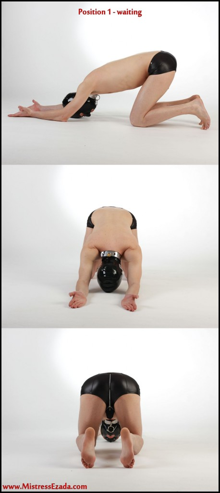
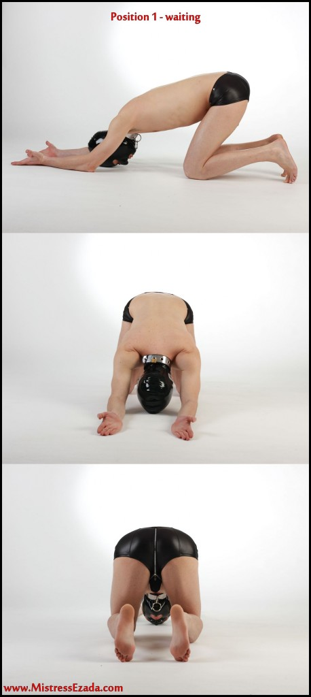
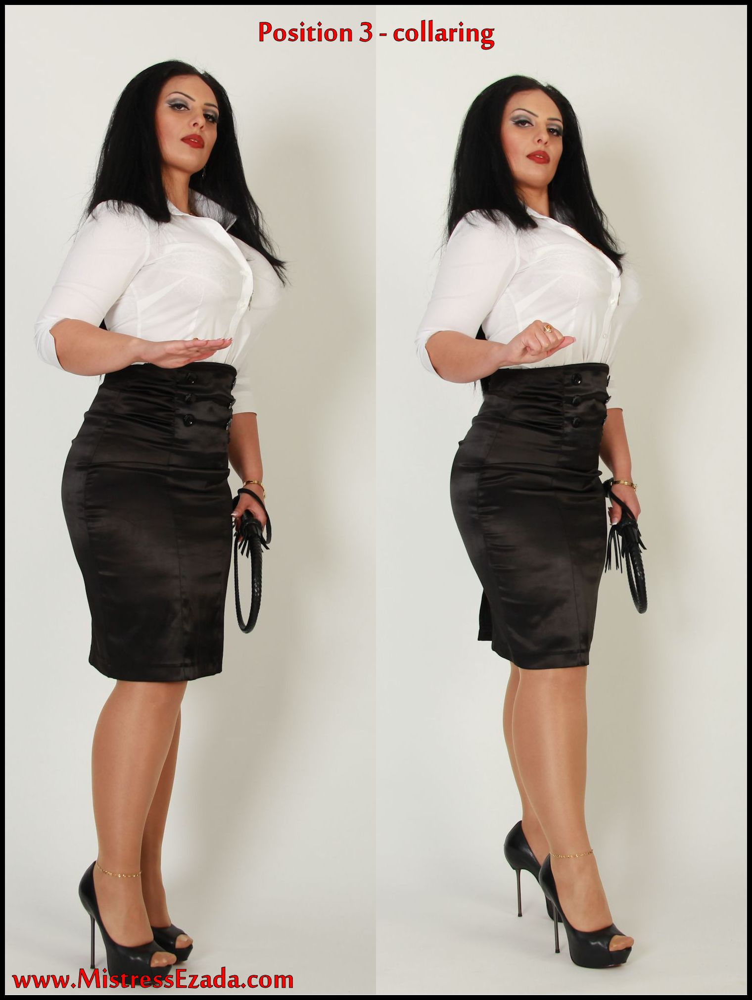
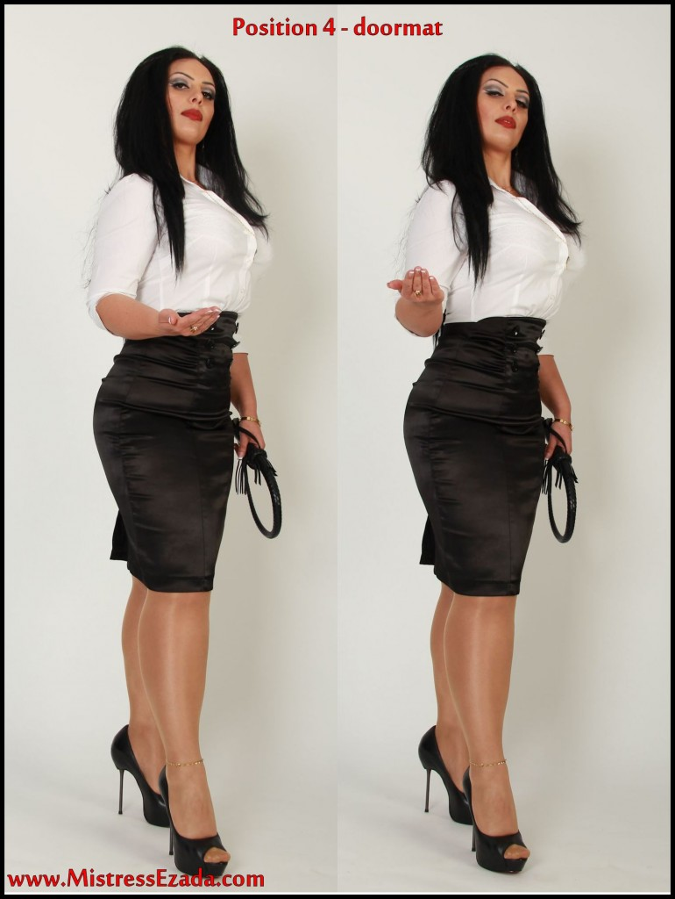

Úvod
Lidé se mě často ptají, jak komunikuji. Jak je to pro Mě důležité. No jasně je to důležité. Vlastně si myslím, že je to nejdůležitější věc ze všech. Bez komunikace není interakce. Bez interakce není Femdom.
Ve Femdom je komunikace hlavně záležitost seshora dolů. Domina činí a otrok reaguje. Ale to není úplné, otrok také komunikuje se svou Paní. Třebaže to není mluvení. Dělá tak neustále. Jeho tělo k ní hovoří. Jestli chápete, co mám na mysli.
Začněme však s Paní jako první. Přirozeně bude hlavně rozkazovat. A nejvíce důležité je, že otrok chápe rozkazy správně a reaguje na ně ihned. Vskutku nemůžu to vyjádřit dostatečně. Je to základ všeho. Paní a otrok budou schopni dosáhnout ultimátního cíle naprosté výměny moci, jestliže je toto elementární znalost a funguje to.
Pro samotné zlepšení interkace Paní a otroka, jsem dala dohromady manuál základních rozkazů, o kterých si myslím, že jsou zásadní pro každý vztah Domina/subík. Není to jen hra při sezení v žaláři. Je to doopravdy. Pro Mě je to způsob, jak komunikovat s Mým otrokem. Je to náš jazyk. Vždy a všude.
Obvykle se bude muset nejdřív naučit, že je vždy “pod” Ní. Duševně, demonstrativně. Také to bude muset ztužit v jeho hlavě – i v prakticém slova smyslu. Takže to znamená, že jeho hlava bude vždy pod Samičí, bude vždy k Ní vzhlížet a Ona na něj bude shlížet. Nikdy by to nemělo být naopak. Jestliže to není možné, např. protože jdete na veřejnosti, měl by být vždy za svou Majitelkou, nikdy před Ní. Pamatujte: Ona vede, on následuje.
Budete překvapeni velikostí účinku, jaký toto jednoduché pravidlo bude mít.
Domina by měla pozorovat, že rozkazy jsou vykonávány přesně, jak byly určeny. Jeho ultimátní cíl bude úspěšné provádění rozkazů. To proto jsem přiložila snímky, na kterých jsou přesně zachyceny polohy. Očekávám od každého otroka, který si domluví se Mnou sezení, že je bude znát zpaměti, předtím než Mě uvidí poprvé. Jsou dostatečně jednoduché k zapamatování dokonce i pro nevzdělaného psa. Když to nebude umět, tak ho vykopnu. Tečka.
Každý rozkaz může být učiněn dvěma způsoby: Vysloven a nebo vyjádřen tichým gestem Mých rukou. Vyslovení je prosté vyřčení názvu polohy, gesto je ukázáno níže na snímcích. Když chci použít gesto, např. na veřejnosti, oznámím to pomocí zvuku “klikátka”. Klikátko je velmi užitečný jednoduchý nástroj užívaný v psím výcviku. Udělá to krátký zvuk kliknutí, na který je Můj otrok naučen. Po zaslechnutí tohoto charakteristického zvuku, jsou budou okamžitě na kolenou (mimo veřejnost) a koukat na Mé ruce pro “přečtení” rozkazu a následného vykonání. Je to velmi pohodlné, poněvadž Mi to dovoluje nařizovat jim i na velké vzdálenosti, bez toho aniž bych musela na ně křičet. Klikátko je dokonalý podnět, říká otrokovi, že chci s ním interagovat, zpozorní a zbystří to jeho smysly. Viděli jste někdy psa střihat ušima a mávat ocasem, když je zavolán? To je ta myšlenka.
Tyto polohy jsou navrženy proti přirozenému pohodlí těla, aby se otrok více zaměřil na polohu jeho těla a cítil se více zranitelný, Paní napospas.
Poloha 1.: Zůstaň

 

Tahle poloha je možná nejdůležitější ze všech. Alespoň je to ta, kterou budete používat nejčastěji. Jelikož jak My/my všechny/všichi víme život otroka je čekání a jistě tak bude činit v poloze Zůstaň.
Poloha hlavy a rukou je naprosto závažná. Obličej na podlaze, dlaně směřovány vzhůru. Otevřením jeho dlaním směrem k Paní, dává otrok najevo jeho otevřenost, jeho připravenost přijmout cokoliv, co Paní nabídne. Nikdy mu nenechte projít s tím, že Vám bude ukazovat pouze hřbety v poloze Zůstaň. Doopravdy nechápu, proč tolik lidí nemůže tuhle snadnou věc pochopit.

Gesto vysílá zprávu o poloze ve formě řeči těla. Ruka Paní říká, “k zemi a zůstaň tam, kde jsi”. Pohybující se ruka si podmaňuje otrokovo tělo, přičemž zároveň působí ochranitelsky, říká “podrob se Mé síle a dej najevo, že jsi Můj.”
Pamatujete si, na začátku jsem mluvila o otrokově komunikaci směrem k Paní? Tohle je ukázkový příklad, jak se to dělá. Jeho otevřené dlaně směřující vzůru zapadají do Její dlaně směřující dolů. Když to půjde dobře, bude u toho působit proud energie mezi dominantní dlaní a zrcadlícími submisivními dlaněmi. Tělo otroka vyzařuje submisivitu k Paní i když samozřejmě nemluví. Nikdy nebude mluvit v ploze Zůstaň, to je absolutní tabu. Mluvení by zničilo jeho napětí. Nebude mu dovoleno vzhlédnout v poloze Zůstaň.
Poloha 2.: Prohlídka


Toto je obvykle druhá poloha, kterou zaujme po poloze Zůstaň. Jeho ruce jsou za zády, alespoň svlečený do půli pasu (jestliže ne zcela) ukáže jeho tělo pro Vaši prohlídku. Ujistěte se, že má rovný postoj, prohnutá záda, v žádném případě ne předkloněný nebo s ohnutými zádami. Jeho celé tělo musí pro Vás vyzařovat napětí, připravenost, uvědomělost a přítomnost.
Význam gesta zjevně symbolizuje polohu. Její rozevírající se a zavírající se prsty tiše naznačují “Roztáhni nohy … připrav se na Mojí prohlídku”.
Poloha 3.: Obojek

Tohle nazývám slavnostní polohou. Nasazování obojku je nádherný moment proměny. Napětí té chvilky, kdy Vy a Váš subík se promění téměř posvátně. Vy se stáváte Majitelkou, Paní, Opatrovnicí. On se stává otrokem, objektem, psem. Jak je obojek jednou nasazený kolem krku, je Váš. Nasazování obojku je nevýznamějším symbolem vlastnictví. Psí obojek znamená postavení jako otroka, zvířete, ničeho jiného než vlastněné věci.
Při nasazování obojku otrok klečí přede mnou, vzpřímeně, ruce má za zády, kouká dolů a je pokorný. Bude čekat, dokud se k němu nepřiblížím a nezapnu popruh kolem krku.
Vždy si vychutnávejte tento speciální okamžik. Dejte si načas. Představte si kněžku, jak provádí posvátný ceremoniál před svými důvěřivými přívrženci.
Pohybujte se pomalu, dělejte malé pauzy. Ujistěte se, že uslyší a bude vnímat “cvaknutí” zapadajícího zámku na jeho krku. Tím vrýváte extrémní důležitost tohoto rituálu do otrocké mysli.
Gesto pro „Obojek“ by mělo být jednoduché pro zapamatování, jak pro Vás, tak i pro otroka. Narovnáte pravou ruku a poté ji sevřete v pěst. Symbolicky to znamená: „Beru si tě, uchopuji tvojí duši a už nikdy ji znovu neztratím.“
Pro Mě je první nasazování obojku velmi speciální. Jelikož jakmile poprvé dám obojek otrokovi, stává se tak Mým. A to navždy, nebo raději na tak dlouho, jak dlouho chci, aby to trvalo. A jelikož tohle poprvé je tak důležité, mám na to speciální rituál: Nejdřív položím rozložený obojek na Můj klín, zatímco Můj otrok klečí přede Mnou. Poté se otrok skloní a položí hlavu na Můj klín tváří dolů tak, že jeho krk leží na obojku. Jeho hlava je v klíně, jak kdyby byl malé dítě. Sám se nabízí, přivoňuje Mi k rozkroku, je tělo Mě žádá, abych zapnula obojek a učinila ho Svým.
Poloha 4.: Podložka


Název říká vše. On je Její podložkou. Otrok si před Paní lehne na záda. Jeho břicho by mělo být blízko Jejích nohou. Jeho paže jsou natažené podél těla, dlaně – jako ve většině poloh - směřují vzhůru.

Používejte podložku k čištěním bot. Stoupněte si na ni. Také je to skvělá poloha pro bechderoucí dušení…
Znamení rukou je jasné. Paní pohne rozevřenou rukou, dlaní nahoru, zleva doprava dozadu. Její ruka představuje ležícího otroka.
Poloha 5.: Ukaž pás cudnosti/Ukaž kulky


“Ukaž kulky”: V této poloze otrok klečí, je vzpřímený, kouká se na Paní. Jeho levá ruka je za zády a ukazuje Vám svého ptáka a kulky s pomocí své natažené pravé ruky.
Ať Vám vystaví jeho nejdrahocennější části pro prohlídku. Vystavením jeho kulek, ukazuje, že ví, že doopravdy jsou Vaše. Vaše k uchopení, zmáčknutí, bičování, laskání, kopání, honění. Cokoliv, co Vás napadne s nimi dělat a potažmo s ním.
Rozkaz je v podobě gesta jednoduchý k pochopení a tedy i k zapamatování: Pravý ukazováček míří na otrokovy genitálie a pomalu se pohybuje nahoru a dolů, tím symbolizuje předvádění.
Když je v pásu cudnosti, tak je to stejný rozkaz, akorát s jiným názvem: “Ukaž pás cudnosti“. To udrží při vědomí, že již nemá kulky k vystavování. Vše co mu zbylo je jen ubohý pták v pásu cudnosti. Nasazením pásu cudnosti jste mu vlastně vzala jeho mužství. Po čase Vám za to bude vděčný. Protože není silnější prostředku kontroly nad samcem a tudíž není silnějšího pouta, které by ho mohlo k Vám přikovat. Ovládejte jeho sexualitu a automaticky ovládáte jeho celého. Věřte mi, tohle je bez pochyb neprůstřelné. Je to takhle jednoduché.

Budete nosit klíč od pásu cudnosti jako Vaší trofej a symbol jeho mužnosti na řetízku kolem krku. Není silnějšího symbolu vlastnictví. Hrajte si s klíčem, když si toho bude moct všimnout, zatočte jej na řetízku, dotkněte se ho, možná chytněte mezi rty. On bude vědět a pocítí to v ptákovi, co to znamená, hrajete si s mocí nad ním. Toho totálně vzruší a začne frustrovat zároveň. A to je přesně to, co chcete: “vzrušená frustrace”. Zní to jako protimluv samo o sobě, ale vlastně to tak není. Je to stav mysli, která přivádí “silné pohlaví” na kolena a dělá je takové, čím se nakonec dříve či později všichni stanou, když to řekneme vznešeně: horkým voskem v našich pevných rukách.
Všímejte si, že vždy používá pravou ruku pro předvádění kulek, nikdy levou. Dbejte na detaily. Detaily jsou důležité! Extrémě důležité! Upuštění od detailů ja jako nechání malé díry ve zdi nadvlády, kterou ho chcete zcela obehnat. A věřte Mi, ponechání malé díry, i když se zdá malinká, že je sotva rozpoznatelná, ho pobídne k škrábání, kopání a vrtání, aby ji rozšířil. A když mu to dovolíte, jedno dne bude díra nevyhnutelně dostatečně velká na to, aby unikl. To nechcete, aby se stalo. Takže pečlivě se poohlížejte po nejmenších prasklinkách ve zdi poslušnosti a ihned je zatmelte jednou provždy.
Poloha 6.: Popelník


Tohle je užitečná poloha dokonce i pro nekuřáky mezi Vámi. Jak jste si již všimli, jsou polohy pro každý tělní otvor otroka k předvedení otevřeně a zranitelně. Tahle je pro ústa. Při Popelníku zakloní hlavu a široce otevře ústa pro možné přijmutí čehokoliv, co Vás napadne. Cigaretový popel, špaček, Vaše plivance, teplá zlatá tekutina, která je tak drahocenná, aby byla spláchnuta do záchoda…
Všimněte si, že nemá povolení polknout, dokud mu to není řečeno. To je zvláště dobré při vkládání věcí, které zanechávájí pachuť v ústech, takže se bude muset poprat s nutkáním to vyplivnout. Nacpat mu celou cigaretu do čumáku je báječné. Přitom jak budete lahodně vdechovat tahy, budete klidně pozorovat jeho stupňující se nepohodlí. Jeho ústa se brzy vysuší a touha po loknutí bude uchvacující. Jde to dobře dohromady se zlatou sprchou, poté co dokouříte cigaretu.
Znamení ruky pro tento rozkaz je zjevný. Ukazováček se pohybuje rychle nahoru a dolu, jako kdyby Paní sklepávala popel ze konce cigarety.
Užitečná rada, jestliže chcete típnout cigaretu o jeho jazyk: jesliže mu chcete pomoct, plivněte mu do úst před tím než začnete típat cigaretu a řekněte mu, ať nepolyká. Dodatečné sliny v ústech ochrání jeho jazyk od žáru nedopalku. Jestliže na druhou stranu si zaslouží krutý trest, utřete jeho jazyk do sucha před típnutím. Suchý jazyk se okamžitě spálí a tomu dá za vyučenou na pár dní.
Poloha 7.: K noze


Název této polohy se může zdát nesprávný, ale přesto se mi líbí. Líbí se mi hodně. Zvolila jsem tento název, protože “K noze!” (“Heel!”) je nejpopulárnější příkaz pro každého psa a při této poloze se otrok přiblíží psovi, jak je to jen možné. Takže je to nejvíce “psí” rozkaz v manuálu. Také proto je to jeden z Mých nejoblíbenějších.

“K noze!” je obecná “víceúčelová” poloha, běžně k jeho zavolání. Otrok je na všech čtyřech po levém boku své Paní. Jeho hlava je blízko Jejího stehna, ale nedotýká se ho! Jakmile se pohne, následuje Ji na všech čtyřech, stejným tempem, stále s jeho hlavou u Jejího levého kolene, zblízka pozorující Její chodidla při chůzi. Otrok také samozřejmě zajistí, že jeho hlava je kousek pozadu a nikdy není před. Nikdy by neměl vyvolat pocit, že vede, ale vždy že je veden.
Gesto pro K noze! je takové, které každý majitel psů zná a používá instinktivně. Paní dvakrát plácne rukou zvenku o stehno. Tím demonstruje, kde chce otroka mít. Vím, že rozkaz káže k noze a ne k patě (heel). Pata (Heel)! prostě zní tak pěkně. Líbí se mi to, když jsou jako psi…
Poloha 8.: Pouta

Tahle poloha je více praktická, technická, používá se pro z pohodlnosti, není tak symbolická jako “Obojek” na příklad. Kdykoliv budete chtít mu spoutat ruce. Ať je to příprava na bičování a nebo držení v žaláři, prostě cokoliv. “Pouta” je nejjednodušší poloha, jak tak učinit.
Otrok si před Vás klekne, jeho oči zdrženlivě koukají dolů. Natáhne k Vám předloktí, dlaně vzhůru jako vždy. Poté můžete jednoduše použít pouta, popruhy na paže nebo řetěz okolo jeho zápěstí.
Znamení ruky symbolizuje čin braní. Paní dá dopředu pravou ruku, dlaň vzhůru a poté sevře prsty v pěst. To říká: ”Zmocňuju se tebe, beru si tě pod svou kontrolu.”
Někteří otroci trapně drží ruce vzhůru a přidávají k poloze různé hloupé obměny. No jednoduše by neměli. Není to nic jiného než pohodlná poloha pro spoutání jejich rukou. Nic víc. Tečka.
Poloha 9.: Trest

Tahle je určitě také důležitá. Převkapivě je to jedna z nejnovějších poloh. Možná je to tím, že jsem předtím používala různé druhy trestacích poloh. Můžete mít také Své obměny, ale určitě je důležité mít jednu “oficiální” polohu pro trest, kterou otrok automaticky zaujme hned po Vašem rozkazu bezmyšlenkovitě. Je něco důležitějšího než otrokova připravenost na trest od Paní? No, když o tom přemýšlím: možná jeho dychtivost sloužit Paní.
Obecně chci, aby všechny polohy byly zaujmutelné bez jakéhokoliv nábytku/sloupu, takže je lze použít kdekoliv a kdykoliv Paní může přidat k tomu hračky a náčiní pro Její potěšení, jestliže je má po ruce, ovšem polohy by měly být použitelné i bez nich.
V poloze Trest by pozadí otroka mělo být snadno dostupné. Takže bude stát ohnutý s rukama na kolenou, jak vidíte na snímku, čekající na Paní, zda se rozhodne udeřit pozadí či záda.
Poloha Trest má však možné obměny: záleží to na závažnosti nadcházejícího trestu a prostorových podmínkách, které se zrovna naskýtají. Můžu chtít otroka svázat. V tom případě rozkaz spojím s ukazováčkem ukazujícím na kus nábytku, mučícího nástroje nebo čehokoliv jiného, k čemu chci otroka připevnit. On se nad tím ohne, zadek má mít, co nejvýše vystrčený a zápěstí a kotníky dá tam, kde by se daly nejlépe upevnit.
Znamení ruky pro tento rozkaz vypadá jako Paní držící trestací nástroj, jako rákoska nebo bič, připravená udeřit otroka.
Poloha 10.: Pohov

Otroctví nikdy nekončí, avšak sezení někdy musí. Smutné ale pravdivé. Takže je potřeba pro oficiální ukončovací rozkaz, který ukončí sezení a propustí otroka zpátky do stavu, kdy je alespoň nějak více lidským. To je “Pohov”. Po tomto rozkazu otrok opustí přítomnost Paní stále na čtyřech. Odleze pozpátku, koukající na Paní, dokud ji nezmizí z očí. Jakmile je po všem, může se zvednout a navrátit se k jakékoliv práci nebo úkolu, kterými je pověřen nebo je mu dovoleno vykonávat.
Znamení ruky je prosté odmávnutí Její pravé ruky. Říká otrokovi “Zmiz Mi z očí a z cesty, už tě nepotřebuji pro teď.”
Ovšem ať už máte sezení či ne: Paní a otrok by nikdy neměli zapomenout, kdo je kdo. Takže očekávám, že po “Pohov” budu se mnou zacházeno Mými otroky nejuctivějším a poslušným způsobem. Můžete si být jisti, že se tohoto konceptu budou držet.
Závěr
Tak to bylo deset základních poloh.
Pro všechny mé čtenářky: doufám, že Vám to pomůže při výcviku a směrování Vašich otroků. Polohy Vám mají usnadnit život a také vyjasnit vztah k Vašim otrokům. Používejte je pro Vaše pohodlí a potěšení, kdekoliv je to možné.
Pro všechny mé čtenáře: naučte se je zpaměti, pilně cvičte. Od teď již nikdy nepřijmu shledání s otrokem, který nebude s Mými rozkazy obeznámen. Má reakce by bylo okamžité odmítnutí navždy.
Pro všechny: Ženská nadřazenost není zábava, není to hra, nemůže být zapnuta a vypnuta. Ženská nadřazenost je zde napořád. Je to více než životní styl, je to náboženství. Učiní to svět lepším místem k životu. Pro nás pro všechny. Tento manuál je jen jeden z prvních kroků správným směrem.
Mistress Ezada Sinn